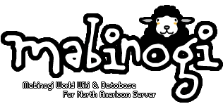
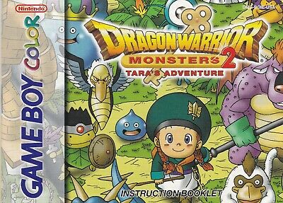

Sasha's Personal Bio
I'm Sasha, I live in Kansas City, Missouri.
I like computers. I do stuff for people.
I like working with SQL, Python, C++, Ruby, and Visual Basic.
I want to learn PHP, Bootstrap, and NodeJS.
I'm trying to learn to like CSS and JavaScript. It's a work in progress! Please bear with me.
I have a lot of hobbies!
My top hobbies are:
- Mabinogi, a Korean MMORPG that I've been playing since 2008.
- Forcing people to try my cooking creations. (They're not that bad, I promise.)
- Reading! I love visual novels, manga, fanfiction, and my kindle. I can't stop buying HumbleBundle book bundles! Help!
- Learning on CodeAcademy.
- Updating the MabinogiWorld wiki or stealing their data and throwing it into my own database.
- Playing my Vita and my 3DS. Though lately the Switch is getting a lot of attention.
- Playing with my cat, Nugget.
Some more in-depth information!
I use to play a card game called Sword Girls Online, and the very first website I built with HTML was a SGO site called AdeptJaina.
My favorite factions were Vita and Darklore.

The first back-end programming language I learned was C++! I'm very fond of it, even though I've switched over to Python now.
Java is the second back-end language I learned, and while it has a lot of nifty frameworks, I'd rank it a lot lower on my list purely because my first teacher was awful.
My favorite teacher at Park University, Bin 'Crystal' Ping, taught me both SQL and Visual Basic, and those were the classes I enjoyed the most because they involved live coding in class and she expected us to actually work to learn material. I had her for four classes, but I would have gladly done four more with her.
Originally, I wanted to go into Networking, but I took one class and realized I hated it. Even a few years later I couldn't wrap my head around all the memorization.


One of my life-long dreams is to make a Visual Novels through Java.
Back when Cosmic Break was still popular, I really wanted to make a Visual Novel for it specifically.

As I mentioned above, I play Mabinogi and I'm a member of the MabinogiWorld wiki where I tend to make a lot of stubs for new items. I like to find flavor text and add them to the wiki.
I also want to create a Mabinogi Skill Calculator.
Lastly, I want to make a Harvest Moon/Animal Crossing-esque game some day, with randomized villages and crops.

Monster-capture games like Pokemon, Yo-kai Watch, and Dragon Warrior Monsters are my favorite.
I've tried making rom hacks of Pokemon before. It was fun! I'd probably enjoy it more that I know how to program.
I also enjoy making RPGmaker games.